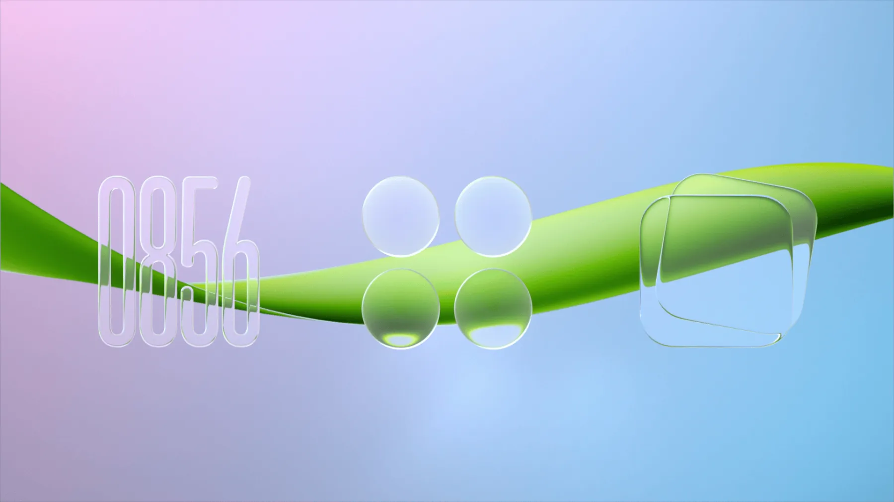
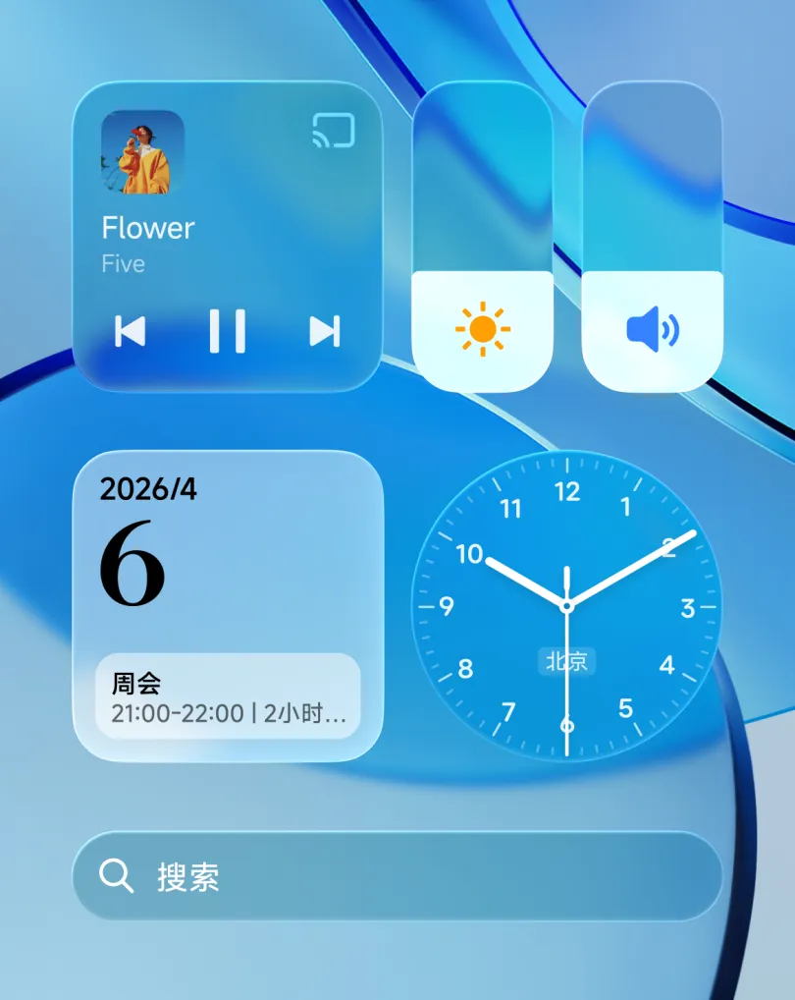
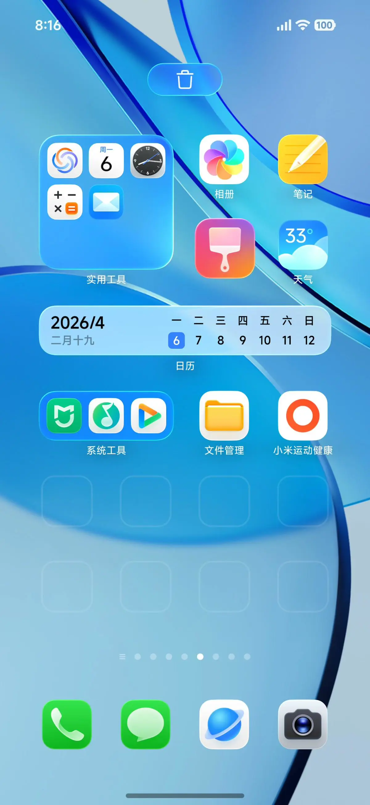
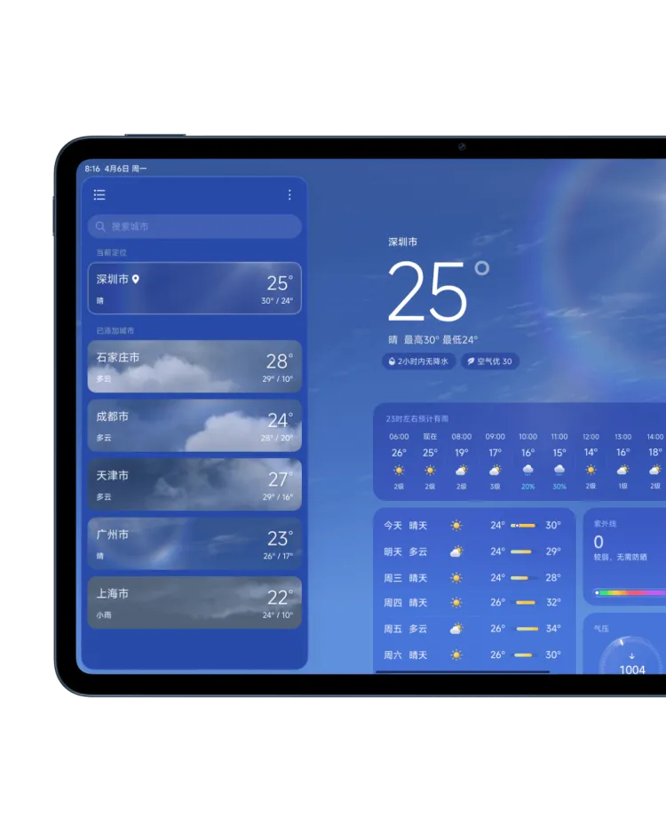
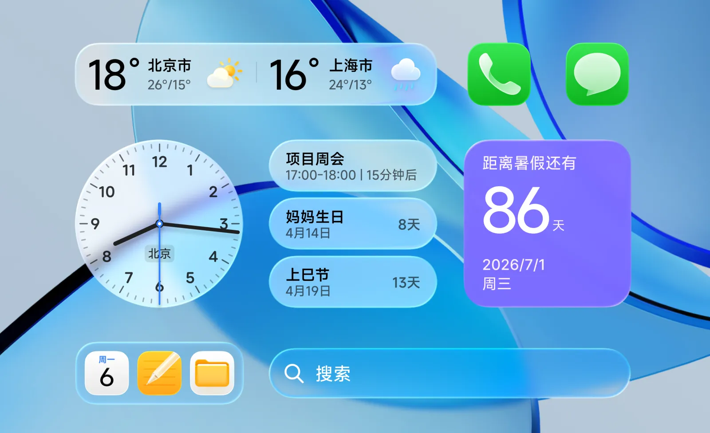
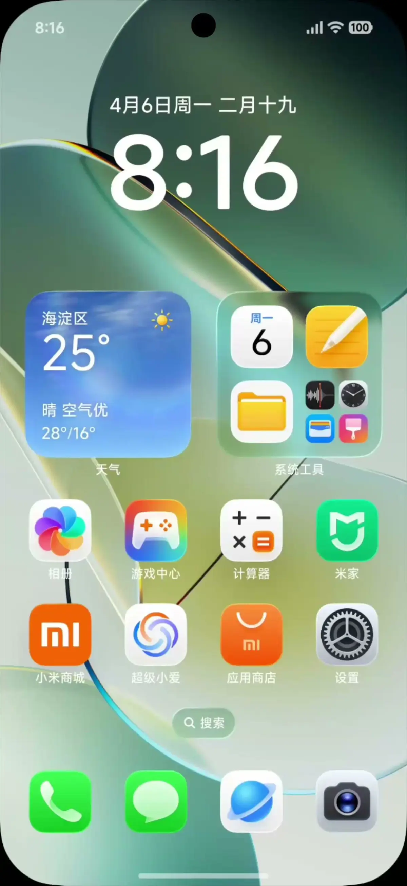
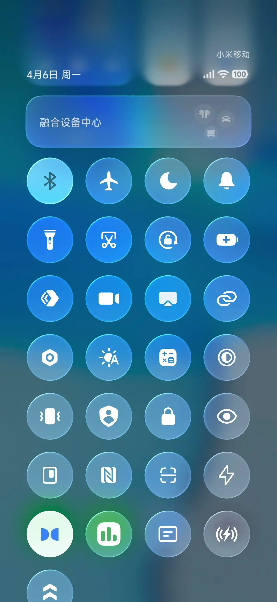

班级大屏作业展示系统，让每一项作业清晰可见
浮窗模式随时可见，多城市天气搜索管理，QQ 自动捕获更智能，AES-256 数据加密守护隐私
作业卡片以画中画浮窗形式置顶显示，支持拖拽、放大回窗、关闭隐藏，不影响其他窗口操作
支持全球城市搜索添加，拖拽排序，双 API 数据源，蓝黄橙红四级预警实时推送
C# Sidecar 监听通知中心，智能评分引擎四维打分，候选面板一键采纳，无需手动录入
AES-256-GCM 透明加密作业数据，密钥由 Windows 凭据保管，向导引导开启，可随时关闭
玻璃拟态卡片，学科色标，圆圈编号美化，二次确认删除防误触
点击底栏学科胶囊，弹出编辑弹窗。支持自动编号（回车续写编号）、圆圈编号美化，同科同日已有作业自动追加内容
悬停卡片浮出编辑/删除按钮。删除采用二次确认——第一次点击变红放大，再点一次才真正删除，iOS 风格 FLIP 动画补位
更多菜单一键截图当前界面（capturePage），直接写入系统剪贴板，粘贴到微信/QQ 即可分享当天作业

桌面小组件、文件夹、应用图标随心摆放，作业卡片一目了然，操作跟手响应
8 学科默认配色，5 套色系可选，底栏胶囊智能收起
默认、暖橙、青蓝、森绿、紫韵五套预设色系，一键切换全部学科配色。也支持逐科自定义颜色
底栏学科胶囊超过一定数量时自动收起，点击展开查看全部。当天有作业的学科优先显示
左右切换日期查看不同天的作业，最早可追溯 3 个月。今日作业始终默认展示
顶栏进度条联动晚修时段，节次标签清晰显示当前进度
设置面板中配置晚修开始/结束时间与节次划分，进度条自动联动
进度条填充采用绿色渐变，实时计算已过时间百分比，节次标签同步切换
窗口后台时暂停刷新节省资源，回到前台立即刷新一次，保证进度准确
双 API 数据源，多城市搜索管理，蓝黄橙红四级预警实时推送
Open-Meteo 免费开箱即用，和风天气精准支持预警。设置面板一键切换，互不干扰
全球城市搜索添加，拖拽排序，仅第一个城市显示在主界面。和风 GeoAPI 城市解析缓存
蓝/黄/橙/红四级气象预警，设置面板勾选关注的级别，顶栏胶囊实时显示，点击查看详情

全新天气界面，信息一眼直达。气温、风向、湿度、AQI、预警一目了然，动态效果更生动
C# Sidecar 监听通知中心，四维评分引擎自动识别作业消息
| 评分维度 | 权重 | 说明 |
|---|---|---|
| 学科匹配 | 30 分 | 老师名单匹配，群聊消息体提取发送者 |
| 意图识别 | 40 分 | 关键词匹配：作业、完成、背诵、练习、预习等 |
| 结构特征 | 20 分 | 编号列表、分点叙述、条目化排版 |
| 内容质量 | 10 分 | 文本长度、信息密度、学科相关性 |
| 阈值 | ≥ 40 分 → 进入候选队列 | |

QQ 通知采用 Windows 通知中心 API 监听，玻璃拟态的采纳面板让消息一目了然，点按即采纳
作业卡片以画中画浮窗置顶显示，拖拽移动，不影响其他窗口操作

作业卡片以独立窗口置顶显示，拖拽移动不影响其他操作。闲置时贴边淡化成胶囊探头，点击即恢复展开；⋯ 菜单可放大回主窗口或关闭此浮窗
主窗口卡片渐出后创建独立浮窗，主窗口自动隐藏。浮窗始终置顶，支持系统级拖拽
点击浮窗 ⋯ 菜单选择"放大"，浮窗关闭、主窗口恢复显示并渐入卡片，无缝衔接
闲置 3 秒后贴边淡化成胶囊形探头，点击即刻恢复展开成完整卡片，需要时显现、不需要时隐入边缘
手动导出、自动快照、一键恢复，确保作业数据永不丢失
一键导出全部作业数据为 JSON 文件，包含作业内容、学科配置、设置项。支持跨设备迁移
每次修改自动创建数据快照，保留最近 N 份历史版本。设置面板可查看和恢复到任意快照
从导出的 JSON 文件或历史快照恢复数据，支持合并模式和覆盖模式，恢复前自动创建当前状态备份
AES-256-GCM 透明加密作业数据，密钥由 Windows 凭据保管，向导引导开启，可随时关闭
作业数据落盘前以 AES-256-GCM 透明加密，读写自动加解密，应用层无感知，本机仅存密文
加密密钥由 Windows 凭据管理器（DPAPI）托管，绑定当前系统用户，不写入配置文件、不上传任何服务器
首次启动向导引导开启（默认开启），可在设置中随时关闭；关闭后数据恢复明文存储，切换平滑无感
背景图缓存、玻璃模糊分级、色系切换，打造专属视觉风格
主进程下载背景图并缓存（魔数校验 JPEG/PNG/WebP/GIF，20MB 上限，12 张缓存上限）。断网时保留缓存图，前台/后台刷新模式可选
顶栏、卡片、弹窗三场景独立控制模糊开关。关闭模糊时实色追色（取背景主色调），性能更优
默认、暖橙、青蓝、森绿、紫韵五套预设色系。颜色选择器支持逐科自定义，HEX 输入 + 色板选取
自动编号开关（回车续写编号），圆圈编号美化开关（①②③ 替换 1. 2. 3.），可独立控制

感知环境色自然融合，顶栏/卡片/弹窗三场景独立开关。柔光玻璃是会呼吸的材质，点按有光、拖拽有光
字号三档调节、动画减弱、模糊分级，适应不同视觉需求
3 个月自动归档，按月浏览历史作业，数据导入导出
超过 3 个月的作业自动归档，按月组织。归档算法幂等去重，损坏文件自动备份
归档窗口中的卡片为只读状态，不可编辑或删除，确保历史记录完整性
设置面板数据管理页支持导出全部数据、导入恢复、清除归档等操作
主进程 1134 行 → 219 行（-81%），三进程分离，24 个渲染模块
班级工作台，让每一项作业清晰可见 · MIT 开源，代码公开可审计
下载安装包 →Windows 10+ · x64 · 84MB · 卸载时可选保留或删除用户数据